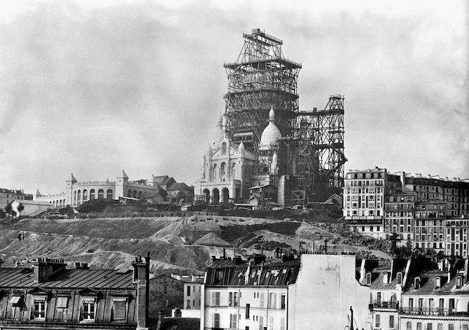

BASILIQUE DU SACRE-COEUR DE MONTMARTRE
Le 16 juin 1875, l'archevêque de Paris, le cardinal Guibert pose la première pierre de la basilique (un marbre rose de Bouère), non loin de l'ancien moulin de la Galette, d'où le surnom donné à la basilique par le peuple de Montmartre, « Notre Dame de la Galette »34. L'œuvre est confiée à la congrégation des oblats de Marie-Immaculée35. Détruite en 1874, la tour Solférino se trouvait à l'emplacement approximatif actuel de la basilique. Des mois sont nécessaires afin de consolider les fondations : les galeries souterraines, les glissements et effondrements de terrain imposent la construction de 83 puits d'une profondeur de trente-trois mètres et le remplacement de 35 000 m3 de terre meuble par leurs équivalents de pierre et de ciment. Remplis de béton et reliés par de puissantes arcatures, ils font office de piliers qui vont chercher la couche solide de la butte sous la glaise36,37. Dès le 3 mars 1876, l'archevêque de Paris inaugure à côté des travaux une chapelle provisoire. En 1878 débute l'édification de la crypte et en 1881 celle de la basilique. L'intérieur de la nef est inauguré le 5 juin 189138. La Troisième République fondamentalement anticléricale veut retirer à l'Église la jouissance de la basilique et la transformer en maison du peuple ou en théâtre. Dans un souci d'apaisement, le gouvernement Clemenceau fait voter la loi du 13 avril 1908 mettant fin au séquestre du Sacré-Cœur qui « devient propriété de la ville de Paris et ne saurait être désaffecté, sauf nouvelle loi39 ». Rauline et Magne conservent le plan original d'Abadie mais ajoutent des éléments néo-Renaissance (formes des fenestrages en plein cintre, dômes élancés)40. Alors qu'Abadie a prévu des dômes hémisphériques romano-byzantins, Magne les remplace par des coupoles allongées au style néo-Renaissance, ce qui leur donne une forme ovale. Ce changement du message architectural d'origine vise à corriger la déformation optique que ressentent les pèlerins sur la parvis de l'église : les coupoles manquent de hauteur, si bien que l'élan vers le ciel disparaît, caché par les soubassements du sanctuaire41. Les vitraux posés entre 1903 et 1920, sont détruits pendant la Seconde Guerre mondiale et remplacés par des vitraux contemporains. Le campanile (tour-lanterne) qui, avec la croix qui le domine, se dresse à 91 m de hauteur42 est terminé en 1912, mais il faut attendre 1914 pour que l'ensemble de la façade soit achevé. La consécration de l'église et son élévation à la dignité de basilique mineure, initialement prévue le 17 octobre 1914, est reportée à cause de l'entrée en guerre. Elle a lieu le 16 octobre 1919, célébrée par le cardinal Vico, en présence du cardinal Amette, archevêque de Paris, et de nombreux évêques, dignitaires ecclésiastiques, membres du clergé, personnalités civiles et simples fidèles43. Le bâtiment est officiellement achevé en 192344 avec la finition de la décoration intérieure, notamment les mosaïques de l'abside45. Les années 1930 voient le début de la construction des annexes, sacristie, bureaux et dortoir pour accueillir les pèlerins. L'édifice n'est définitivement achevé qu'après la Seconde Guerre mondiale dont les bombardements ont détruit les vitraux. « Au total, le programme a coûté six fois plus cher que prévu et a duré plus d'un demi-siècle41 ».
La crypte qui a la même disposition que l'église, est une des curiosités de la basilique. Un saut-de-loup, large de quatre mètres, l'entoure et l'éclaire, grâce aux fenêtres et oculi percés dans le mur. L'espace central de la crypte est occupé par la chapelle de la Pietà qui contient, outre une statue monumentale de la Vierge au pied de la Croix (œuvre dominant l'autel, de Jules Coutan en 1895), des tombeaux liés aux personnages importants qui ont marqué ce lieu sacré (des caveaux creusés sous cette chapelle des morts contiennent les sépultures des cardinaux Guibert et Richard) et la première pierre de la basilique. Les promenoirs du déambulatoire desservent sept chapelles latérales à l’est, et sept chapelles latérales à l’ouest correspondant aux bas-côtés de la basilique. La chapelle absidiale, dédiée à la Sainte Famille, est surmontée d’une statue du Sacré-Cœur. Œuvre de Robert Falcucci réalisée en 1960, elle représente le Christ, bras grand ouverts et cœur en avant. Une chapelle dédiée à saint Pierre, élevée sur plusieurs gradins, entourée de colonnes, domine la crypte et correspond au chœur de la basilique.